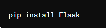
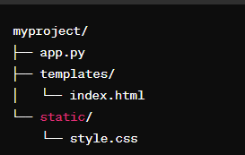
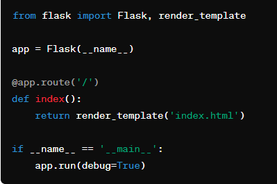
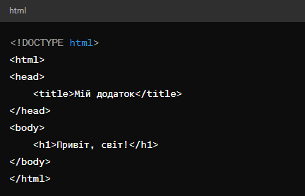
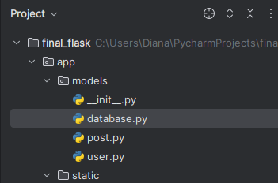
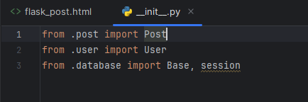
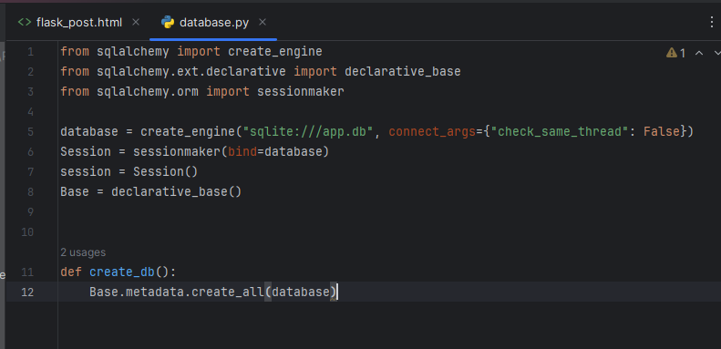
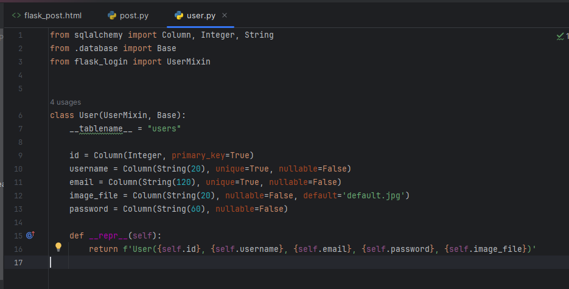
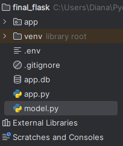
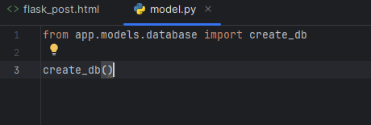

Flask
Flask - це легкий фреймворк для побудови веб-додатків на мові програмування Python. Він дозволяє швидко створювати веб-
додатки з мінімальними зусиллями завдяки своїй простоті та гнучкості.
1.Установка Flask: Flask можна легко встановити за допомогою pip, стандартного менеджера пакетів Python:
2.Структура проекту: Flask не накладає жорстких правил стосовно структури проекту, але зазвичай використовується певна організація. Наприклад:
app.py: Основний файл додатка Flask.
templates/: Каталог для HTML-шаблонів.
static/: Каталог для статичних файлів, таких як CSS, JavaScript, зображення.
3.Створення додатку: Простий приклад створення додатку Flask:
4.Створіть шаблони: Визначте шаблони у папці templates. Наприклад, index.html:
5.Щоб створити базу даних, нам потрібно створити Python package і назвати його models. Приклад того, як у нас буде виглядати структура:
6.Приклад як виглядає __init__.py який знаходиться в models
7.Цей код створює з'єднання з базою даних SQLite, об'єкт сесії для взаємодії з базою даних та базовий клас для визначення моделей даних. Функція create_db() викликає метод create_all(), щоб створити всі таблиці, визначені у вашому проекті.
8.Потім ми у коді визначається модель користувача для зберігання їхніх даних у базі даних. Клас User успадковує клас UserMixin з Flask-Login і базовий клас Base для створення моделі. Визначаються колонки таблиці, такі як id, username, email, image_file та password, які відповідають відповідним полям користувача. Метод __repr__ використовується для представлення об'єкта користувача в рядковому форматі.
9.А тепер ми створюємо model в нашому проекті. Наприклад:
10.Тут ми викликає функцію create_db(), яка створює базу даних за допомогою SQLAlchemy на основі описаних моделей даних у вашому додатку.
Отже, ми навчилися створювати базу даних і побачили, як повинна виглядати структура проекту